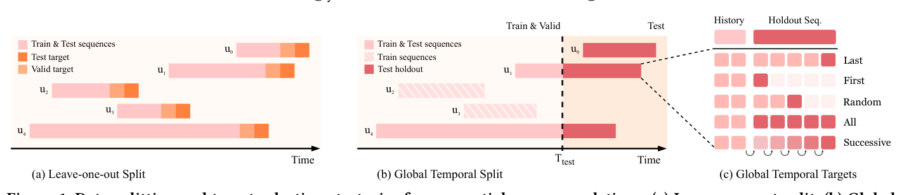

Time to Split: Exploring Data Splitting Strategies for Offline Evaluation of Sequential Recommenders (是时候切分了：序列推荐离线评估的数据切分策略探索)
- 会议/期刊: ACM RecSys 2025
- 作者与机构: Danil Gusak, Anna Volodkevich, Anton Klenitskiy, Alexey Vasilev, Evgeny Frolov (AIRI / Skoltech / Sber AI Lab / HSE University)
- 推荐链路定位: 离线评估协议（服务于召回/精排全链路的 Next-Item Prediction 评测）
- 研究方向: 序列与会话推荐 / 去偏与工业评测基准
- 论文原文: https://arxiv.org/abs/2507.16289v1
- 开源代码: https://github.com/monkey0head/time-to-split
TL;DR (1分钟核心速览)
序列推荐（SRS）离线评测长期被 Leave-One-Out (LOO) 主导，但它允许训练集与测试期时间重叠，造成时序泄漏与不切实际的长测试窗口，且与真实"未来一段时间内做 next-item 预测"的线上场景错位。本文系统形式化了 Global Temporal Split (GTS) 在 NIP 任务下的目标选择（Last / First / Random / Successive / All）与验证集构造（GT / LTI / UB）变体，在 8 个数据集、3 个主流模型（SASRec+/BERT4Rec/GRU4Rec，共 100+ 超参配置）上以 Kendall/Spearman 排序相关性为标尺，证明 LOO 与最贴近生产的 GTS Successive 平均 Kendall 仅 0.71，而 GTS Random 达 0.91、GTS Last 达 0.83，并给出可直接落地的评测协议建议。
Background & Motivation (背景与核心矛盾)
- 主流范式: 2022–2024 年 RecSys/SIGIR/CIKM 的 75 篇 SRS 离线评测论文中，77.3% 使用 LOO，仅 16% 用 GTS，而真正把 GTS 与 NIP 目标对齐的只有 6.7%；主流框架（RecBole、Cornac、Elliot 等）普遍缺少 "GTS + NIP" 的原生支持（仅 RecPack 支持）。
- 前人局限: ① LOO 只保留每个用户最后两个交互，不保全局时间线，未来交互可泄漏进训练集，且测试目标横跨整个数据集生命周期（ML-20M 上测试期长达 7385 天），统计显著性虽高但场景失真；② 直接照搬经典 top-K 的 80/10/10 时间切分，未定义 holdout 序列的目标物品如何选取，与 NIP 任务不匹配。
- 核心洞察 (Key Insight): 切分策略不仅改变指标绝对值，更会改变模型排序——例如 SASRec+ 在 ML-1M 的
Successive目标下排第一，在All目标下跌至末位；因此"用哪个切分"直接决定学术结论与上线决策。 - 本文切入点: 以最贴近生产的
GTS Successive为参照基准，用排序相关系数量化各切分/目标/验证方案与它的一致性，从而给出可复现的协议推荐。
Method (核心方法设计)
1. 整体框架 (Overall Architecture)
本文不提出新模型，而是构建一套切分策略的形式化空间 + 一致性评估方法论：先定义切分的两条硬性属性（保全局时间线、对齐 NIP），再枚举 GTS 的 5 种目标选择与 3 种验证构造，随后对每个 (切分, 目标, 验证) 组合训练 100+ 超参配置的模型，用 Kendall/Spearman 秩相关衡量其与参照方案 GTS Successive 的排序一致性，最后用重训练实验检验验证集选模的可靠性。
flowchart TD
A["原始交互日志"] --> B["切分策略空间: LOO vs GTS"]
B --> C["GTS 目标选择: Last/First/Random/Successive/All"]
B --> D["GTS 验证构造: GT/LTI/UB"]
C --> E["训练 100+ 超参配置模型"]
D --> E
E --> F["Kendall/Spearman 秩相关 vs GTS Successive"]
F --> G["协议推荐 + 重训练增益分析"]
2. 关键设计拆解 (Key Designs)
-
GTS 目标选择算子（把"切分"补全为"切分+目标"）：痛点在于 GTS 只给出时间截断点 \(T_{\text{test}}\)，却未定义 holdout 序列的监督信号。本文形式化 5 种目标：
Last（holdout 末项）、First（holdout 首项）、Random（holdout 内随机采样）、Successive（holdout 每项各作一次目标，输入历史随之前滚）、All（holdout 全部项作为一个 ground-truth 集合）。其中Successive对含\(n\)个 holdout 交互的用户产生\(n\) 次评估并按用户预平均，最贴近"截断点后一段时间内持续预测"的线上形态；All则因把多物品当单一相关性集合而偏离 NIP 目标。 -
验证集构造与"验证-测试一致性"度量：GTS 下验证集有三种构造——
GT（在 \(T_{\text{val}}<T_{\text{test}}\)处再切一刀，严格无泄漏）、LTI（每用户\(T_{\text{test}}\)前最后一项作验证目标，覆盖全用户但验证期极长）、UB（随机抽 1024 个用户整段历史作验证，保留训练用户完整序列）。本文用验证指标与测试指标的秩相关\(\tau(\text{Valid},\text{Test})\) 来量化"选模可靠性"，而非仅看验证集绝对分数。 -
训练目标、负采样与推理效率：三个基线均采用全库 softmax 交叉熵（full CE over catalog，即免负采样、全库归一化），SASRec+/BERT4Rec 隐层 32–256、1–3 层、1–4 头，GRU4Rec 隐层 16–512、1–4 层，dropout 0.1–0.5，batch 256，最大序列长 128，Adam lr=\(10^{-3}\)，早停 patience 10/20。推理侧的关键开销来自
Successive：holdout 平均长度在 Zvuk/ML-20M 上超过 100，推理计算随 holdout 长度线性增长，这正是Last/Random作为廉价替代的动机。
Experimental Setup & Evaluation Protocol (实验设置与评估协议)
- 数据集与预处理: 统一
5-core过滤、去除用户历史中连续重复物品、评论/评分一律视为隐式反馈；YooChoose 采样 200 万用户、Zvuk 采样 2 万用户以控制算力。
| 数据集 | #Users | #Items | #Interactions | 密度 (%) | 时间跨度(天) |
|---|---|---|---|---|---|
| Beauty | 22,363 | 12,101 | 198,502 | 0.07 | 4,424 |
| BeerAdv | 14,635 | 22,074 | 1,475,412 | 0.46 | 5,620 |
| Diginetica | 61,279 | 25,593 | 485,903 | 0.03 | 152 |
| ML-1M | 6,040 | 3,416 | 999,611 | 4.84 | 1,038 |
| ML-20M | 138,493 | 18,345 | 19,984,024 | 0.79 | 7,385 |
| Sports | 35,598 | 18,357 | 296,337 | 0.05 | 4,521 |
| YooChoose | 335,203 | 20,758 | 2,792,229 | 0.04 | 181 |
| Zvuk | 19,267 | 150,206 | 8,087,953 | 0.28 | 91 |
- 数据划分与防穿越 (Splitting Strategy): 对比
LOO（留最后一项测试、倒数第二项验证）与GTS（主实验取交互量 \(q_{0.9}\)分位作\(T_{\text{test}}\)，另扫\(q\in\{0.8,0.9,0.95,0.975\}\)）；GTS 下测试目标取 Last/First/Random/Successive/All，验证取 GT/LTI/UB。GTS 严格保证\(T_{\text{test}}\) 之后交互不进入训练，从机制上消除时序泄漏。 - 排名评测协议 (Ranking Protocol): 采用无偏 Full-Ranking（全库未交互物品排序），指标为 NDCG@K、MRR@K、HR@K，\(K\in\{5,10,20,50,100\}\)；统一施加
filter seen（剔除已交互物品），但 Zvuk/YooChoose/Diginetica 因天然含重复交互而不施加。 - 对比基线与超参设置: SASRec+（全 CE 版 PyTorch 实现）、BERT4Rec（mask 概率 0.2）、GRU4Rec（全 CE），另在排序分析中引入非神经基线 SeqKNN；SASRec+/BERT4Rec 各 108 组配置、GRU4Rec 104 组，共 300+ 评估点以保证秩相关统计稳健。
Key Experimental Results (实验关键数据)
1. 主实验对比 (Main Results)
核心结果是各切分/目标与参照方案 GTS Successive 的排序一致性（8 数据集平均，越高越可信）：
| 测试切分/目标 | Kendall HR@10 | Kendall NDCG@10 | Spearman NDCG@10 | 测试用户占比 | 测试期占比 |
|---|---|---|---|---|---|
| GTS Random | 0.91 | 0.91 | 0.98 | 10%–44% | 2%–15% |
| GTS Last | 0.83 | 0.83 | 0.94 | 10%–44% | 2%–15% |
| LOO | 0.71 | 0.71 | 0.87 | 100% | 68%–100% |
| GTS First | 0.70 | 0.62 | 0.72 | 10%–44% | 2%–15% |
| GTS All | 0.57 | 0.43 | 0.53 | 10%–44% | 2%–15% |
验证集选模可靠性（测试目标为 GTS Successive 时，验证-测试 NDCG@10 秩相关）：
| 验证构造 | Kendall NDCG@10 | Spearman NDCG@10 | 备注 |
|---|---|---|---|
| GT Successive | 0.83 | 0.95 | 与测试完全同构，最优 |
| GT Last | 0.82 | 0.95 | 几乎无损，计算更省 |
| LTI | 0.82 | 0.95 | 略逊，验证期失真 |
| UB | 0.80 | 0.94 | 需额外控制用户数 |
| GT First | 0.59 | 0.75 | 不推荐 |
| GT All | 0.44 | 0.56 | 任务错配 |
2. 消融实验 (Ablation Study)
以"移除/替换某一协议组件"视角做紧凑消融（8 数据集平均 Kendall NDCG@10，参照 GTS Successive）：
| 配置变体 | Kendall | Δ vs 最优 | 结论 |
|---|---|---|---|
| GTS Random（完整） | 0.91 | — | 一致性最高但非确定 |
| w/o Random → Last | 0.83 | −0.08 | 确定性替代，代价可接受 |
| w/o Random → LOO | 0.71 | −0.20 | 时序泄漏显著拉低一致性 |
| w/o Successive 参照 → All | 0.43 | −0.48 | 任务错配最严重 |
| w/o GT 验证 → LTI | 0.82 | −0.01 | 验证期过长但影响小 |
| w/o GT 验证 → UB | 0.80 | −0.03 | 需控用户数 |
重训练增益（SASRec+ 最优配置，NDCG@10）：
| 数据集 | 切分/目标 | 验证 | 测试(未重训) | 测试(重训) | Δ |
|---|---|---|---|---|---|
| Beauty | GT/Sucv. | 0.044 | 0.022 | 0.040 | +81.8% |
| Diginetica | GT/Sucv. | 0.154 | 0.149 | 0.160 | +7.38% |
| Beauty | UB/Last | 0.074 | 0.036 | 0.037 | +2.78% |
| Diginetica | LTI/Last | 0.187 | 0.135 | 0.126 | −6.67% |
| Diginetica | LOO/Last | 0.179 | 0.181 | 0.157 | −13.3% |
3. 关键实验发现 (Key Findings)
- LOO 的"高显著性"是假象：LOO 覆盖 100% 用户、测试期占数据集生命周期 68%–100%（ML-20M 达 7385 天），统计检验虽更易显著，但与生产形态的排序一致性仅 0.71，且在 Diginetica 上重训练后指标反降 13.3%，说明其选出的"最优模型"并不可靠。
First目标被会话边界污染：First目标与前一交互的中位时间间隔远大于全量数据分布（如 Beauty 上 8,640,000 秒 vs 全量 345,600 秒），因为全局截断点常落在用户不活跃期，使首个 holdout 项成为新会话起点，导致其 Kendall 仅 0.62，应明确弃用。Random/Last是Successive的高性价比替代：二者一致性分别达 0.91/0.83，而Successive在 Zvuk、ML-20M 上 holdout 平均长度超 100，推理开销线性膨胀；实践中推荐Last（确定性、可复现）为主、Random（多 seed 平均）为辅，Successive仅用于离线深度分析。
Highlights & Limitations (亮点、对比与审稿批判)
- 与代表作对比 (vs. Prior Work): 相比 Ji et al. / Sun 等仅从"数据泄漏"角度批判 LOO 的定性工作，本文首次把 GTS 在 NIP 下补全为"切分+目标+验证"三元组并给出定量秩相关证据；相比 Meng et al. 对经典 top-K 切分的相关性分析，本文聚焦序列模型与 NIP 任务，且引入
Successive这一最贴近生产的参照基准；相比 Dacrema 等对算法可复现性的批判，本文把矛头指向评测协议本身。 - 可迁移亮点: ① "以最贴近生产的方案为参照、用 Kendall/Spearman 量化协议一致性"这一方法论可直接迁移到 CTR 预估、生成式推荐的离线评测审计；②
Successive的按用户预平均策略可避免活跃用户主导指标分布，值得在长序列场景推广。 - 审稿级局限批判: ① 仅覆盖 3 个神经基线（SASRec+/BERT4Rec/GRU4Rec），未纳入 S³-Rec、CL4SRec 等自监督模型与 LLM4Rec，结论对新一代架构的外推性存疑；② GTS 的 \(q\) 分位需按数据集手工调参以平衡"用户数-测试期-训练量"，论文未给出自动化选取准则，且
Random目标的非确定性在小数据集上可能引入额外方差。
Rating (四维评分)
- 方法创新性 (Novelty): ⭐⭐⭐ （非新模型类工作，但把 GTS 在 NIP 下形式化为"切分+目标+验证"三元组并引入一致性度量，问题定义本身有开创性）
- 评估协议与实验扎实度 (Protocol & Experiments): ⭐⭐⭐⭐⭐ （8 数据集 × 300+ 超参配置 × 全库排序 × 双秩相关系数 + 重训练验证，协议审计的教科书级扎实度）
- 写作与数学规范度 (Clarity & Rigor): ⭐⭐⭐⭐ （切分变体定义清晰、图表自洽，但部分符号如 \(T_{\text{val}}\)/\(T_{\text{test}}\) 的选取准则散落各处，需读者自行拼合）
- 工业落地与复现价值 (Industrial & Practical Value): ⭐⭐⭐⭐⭐ （开源完整切分代码，直接给出"用 GTS+Last/Random、配 GT 验证、上线前重训练"的可执行建议，对工业评测流水线立即可用）